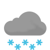

Weather
Germersheim 7.1-9.5
7.1-9.5

7.6-8.8 Sat

8.4-9.2 Sun

9.4-9.9 Mon

7.6-9.5 Tue

7.9-9.3 Wed

8.2-11.6 Thu

5.5-8.0 Fri

5.6-9.8 Sat

3.7-5.3 Sun
Erlabrunn
-1.5-1.1
-1.5-4.1 Sat

3.6-4.8 Sun

5.3-6.3 Mon

3.9-5.5 Tue

5.2-5.9 Wed

5.6-7.5 Thu

1.4-4.3 Fri

2.0-4.9 Sat

1.5-2.9 Sun
Schmilka 0.6-3.0
0.6-3.0

0.2-2.5 Sat

2.5-8.7 Sun

9.0-10.5 Mon

7.9-10.3 Tue

8.1-8.7 Wed

7.7-9.4 Thu

5.9-7.5 Fri

4.9-7.6 Sat

4.1-5.3 Sun